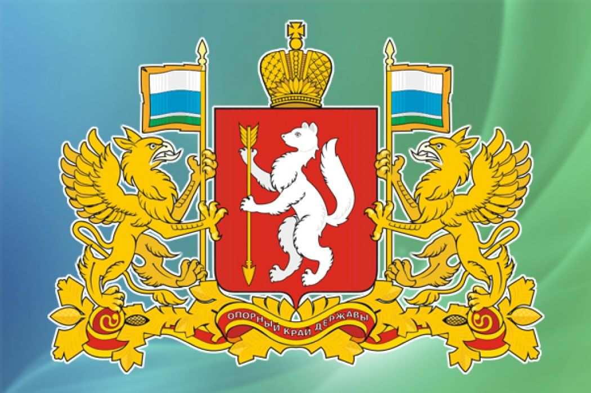

Е
катеринбург


Е
катеринбург
История Екатеринбурга ведет отсчет с 1723 года, когда на реке Исети был основан завод-крепость. Место для завода выбрал Василий Татищев, строительство крупнейшего в Европе железоделательного завода было завершено под руководством Вильгельма де Геннина. Город назван в честь императрицы Екатерины I.
Исторический день рождения Екатеринбурга — 18 ноября 1723 года. Именно в этот день (7 ноября по старому стилю) в цехах железоделательного завода был осуществлен пробный пуск кричных бо́евых молотов.
Производственные мощности Екатеринбургского завода включали в себя: 2 домны, 14 кричных молотов, медеплавильную фабрику, стальную и якорную фабрики, машины для сверления пушек и другое. Основная продукция — железо, чугун и медь. В полном объеме мощности завода никогда не использовались. В 1737 году остановлены доменные печи. С конца 1750-х годов постепенно уменьшался выпуск продукции на молотовых, стальной и проволочной фабриках, а в 1769 году прекращено медеплавильное производство. В 1808 году Екатеринбургский завод закрыт, а история города Екатеринбурга вышла на качественно новый этап, связанный с развитием большого уездного центра с диверсифицированной экономикой.
В XVIII веке Екатеринбург развивается как административный центр горнозаводской промышленности Урала и Сибири. Система отраслевого управления горными заводами Урала, Забайкалья и Алтая была независима от местных губернских властей. Ее центральный орган располагался в Екатеринбурге. После 1781 года управление горной частью было децентрализовано и подчинено казенным палатам губернских правлений.
В 1738 году в городе основана камнерезная мастерская, ставшая в 1765 году Екатеринбургской гранильной фабрикой. В 1761 году через Екатеринбург прошел Сибирский почтовый тракт.
В 1781 году Екатеринбург получил статус уездного города в Пермской губернии. В 1783 году ему был присвоен герб, а в 1787 году состоялись первые выборы в городскую (шестигласную) думу. В городском самоуправлении в XVIII — первой половине XIX века доминировали купцы-старообрядцы.
В 1807 году Екатеринбург получил статус горного города, согласно Проекту горного положения. Горный начальник заводов Екатеринбургского горного округа, наравне с городской думой, отвечал за городское хозяйство и правопорядок. Мастеровые и крестьяне казенных заводов освобождались от местных налогов. В 1831 году в Екатеринбург перенесена резиденция Главного начальника горных заводов Хребта Уральского, с начала 1850-х он фактически единолично управлял городом.
С 1726 года в Екатеринбурге началось изготовление медных денег, сначала «плат» (тяжелых квадратных пластин, где номинал был уравнен с ценой металла), а затем с 1735 года общероссийской медной монеты. Екатеринбургский монетный двор производил до 80% медной монеты в России, закрыт в июне 1876 года. Изготовленные на Екатеринбургской гранильной фабрике вазы и чаши украшали Зимний дворец. На основанной в 1839 году механической фабрике производились водяные колеса и турбины, паровые машины, металлорежущие станки и т. д. В 1874 году фабрика потеряла заказы и закрылась.
Основные занятия купечества — салотопенное, мыловаренное, кожевенное производства, торговля мясом и скотом, подряды на перевозку металлов. Самый первый маслобойный завод основан в 1776 году, кожевенный — 1782 году, мыловарение началось с 1787 года, солодовенный промысел с 1785 года. По данным на 1804 год сала вытапливалось на 10 заводах на 603 тысячи рублей, 20 кожевенных предприятий выделывали кожи на 30 тысяч рублей, 9 кирпичных заводов производили до 400 тысяч кирпичей ежегодно (на 3,6 тысячи рублей). Кроме этого екатеринбургским купцам принадлежало несколько мучных мельниц, мыловаренных, маслобойных и солодовенных предприятий. Располагались они на усадьбе рядом с домом. Старообрядцы селились на так называемой «Заимке», в южной части города.
С 1820-х годов самые богатые из екатеринбургских купцов занялись разработкой приисков россыпного золота в Западной Сибири. В июне 1826 года екатеринбургский купец Яким Рязанов одним из первых в России получил разрешение заниматься золотопромышленностью. В компании с купцами Ф. Казанцевым и С. Баландиным на рубеже 1820-1830-х годов он разрабатывал прииск в районе реки Кундустуюл Томской губернии. В первые 5 лет им удалось добыть свыше 116 пудов золота. Крупным золотопромышленником был Тит Зотов, владевший приисками по реке Севагликон Енисейской губернии. Среди ремесленников преобладало камнерезное и ювелирное искусство. Екатеринбург был центром урало-сибирского старообрядчества беглопоповского согласия.
После отмены крепостного права горная промышленность Урала переживала серьезный кризис. В 1863 году екатеринбургское общество добилось отмены статуса горного города. В 1872 году избрана новая городская дума по цензовому принципу. Влияние горных властей в Екатеринбурге постепенно уменьшалось, что положительно сказывалось на городском хозяйстве.
В тот же период происходила смена торгово-промышленной элиты, начали развиваться транспорт, мукомольная промышленность, сфера услуг. В 1847 году в Екатеринбурге открылась контора Государственного коммерческого банка для кредитования горной промышленности. В 1864 году учрежден Общественный банк, основу капитала которого составили средства из городского бюджета. В 1871 году появилось отделение Волжско-Камского банка — первого в городе коммерческого кредитного учреждения. В 1872 году создан Сибирский торговый банк, к началу XX века ставший одним из крупнейших в России.
В 1878 году построена первая на Урале железная дорога Екатеринбург-Пермь, связавшая заводы Среднего Урала с губернской столицей. Ее строительство финансировалось частным капиталом. В последующие десятилетия Екатеринбург стал крупным железнодорожным узлом: направления Екатеринбург — Тюмень — Омск (1885 год) и Екатеринбург — Челябинск (1896 год) давали выход на Сибирскую железную дорогу, а новая железнодорожная ветка Екатеринбург — Кунгур — Пермь (1909 год) — прямой путь к Санкт-Петербургу. Спроектированная в начале XX века железная дорога московского направления Екатеринбург — Казань была закончена только в 1920 году.
Рост населения Екатеринбурга и сеть железных дорог способствовали развитию мукомольной промышленности. В 1884 году начала работать первая на Урале паровая мельница городского головы И. И. Симанова, ставшая ведущим предприятием этой отрасли в урало-сибирском регионе. Вторая паровая мельница, А. Е. Борчанинова, построена в 1906 — 1908 годах. Большое значение для экономической и общественной жизни города имела прошедшая в Екатеринбурге в 1887 году Сибирско-Уральская научно-промышленая выставка. К 1904 году в Екатеринбурге (без пригородов) насчитывалось 49 промышленных предприятий с оборотом 4070 тысяч рублей и более 300 небольших кустарных заведений и мастерских. Самые крупные из них: механический завод Ф. Ятеса, производивший паровые машины, суконная фабрика братьев Макаровых, пивоваренный завод братьев Злоказовых.